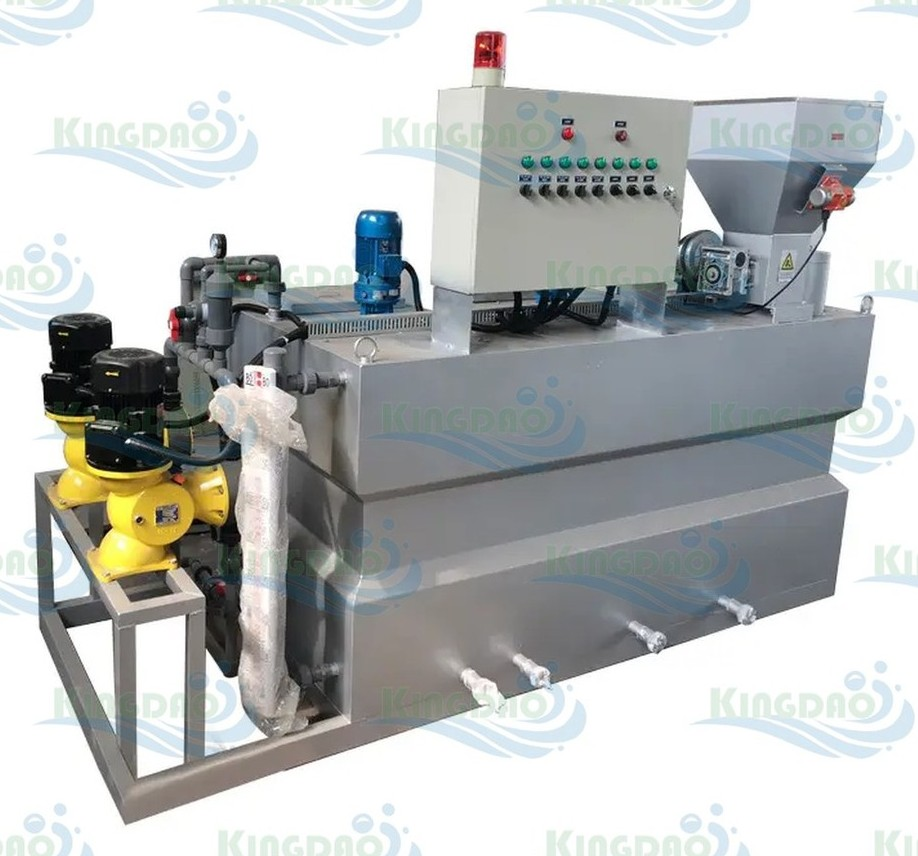
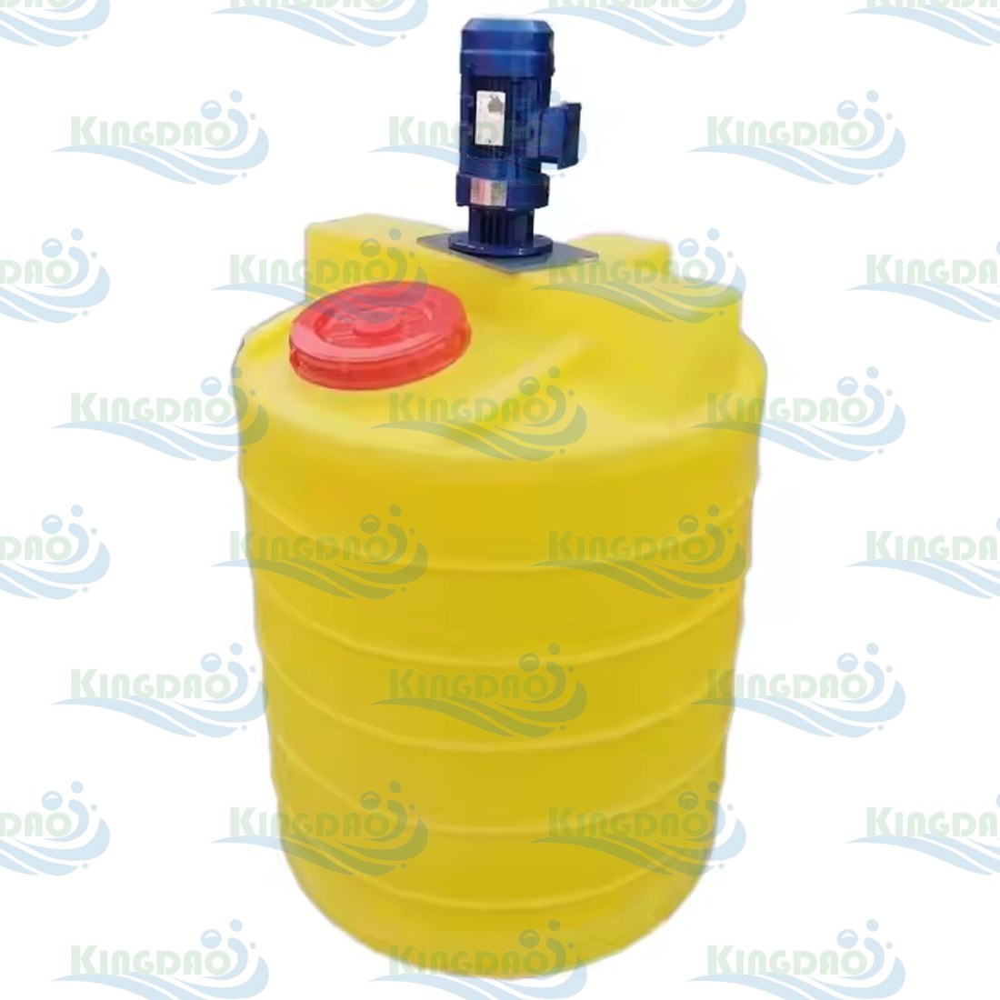

In short: Preparation and dosing systems for PAC, polymer and other chemicals: powder wetting, mixing, maturation and dilution in one skid, solution strength held at the setpoint instead of drifting, metering pumps selected against the dose range and discharge pressure, and dose control proportional to flow or load.
Dosing is where a plant most often loses performance for reasons that are not the process: the powder is not fully wetted, the solution strength drifts, the pump is not calibrated. An automatic preparation and dosing system takes those variables out of the operator's hands.
For PAC we supply fully automatic and semi-automatic preparation units with metering pumps; for polymer, a three-chamber preparation tank with maturation and dilution, matched to the dewatering stage it serves.
Same order as the tables above — the physical unit behind each specification.


Wetting, mixing, maturation and dilution in one sequence; the concentration stays at the setpoint instead of drifting with the operator's day.
| Model | Preparation capacity L/h | Dilution water L/h | Water pressure bar | Dry powder dose kg/h | L × W × H mm | Inlet | Outlet |
|---|---|---|---|---|---|---|---|
| Fully automatic 500 L | 500 | 500 | 3–5 | 1.3–29 | 1300 × 700 × 800 | 1″ | DN25 |
| Fully automatic 1000 L | 1,000 | 1,500 | 3–5 | 1.3–29 | 1450 × 750 × 900 | 1″ | DN25 |
| Fully automatic 2000 L | 2,000 | 3,000 | 3–5 | 1.3–29 | 2000 × 1000 × 1000 | 1″ | DN25 |
| Fully automatic 3000 L | 3,000 | 6,000 | 3–5 | 6–132 | 2400 × 1200 × 1200 | 1½″ | DN25 |
| Fully automatic 6000 L | 6,000 | 12,000 | 3–5 | 12–264 | 3000 × 1450 × 1450 | 2″ | DN32 |
For PAC and PAM powder preparation. Semi-automatic units and metering pump selection are quoted against the dose and discharge pressure required.
A powder preparation set is three tanks, a feeder and a wetting head working under one controller — the parts that decide whether the polymer is fully activated or half-wasted.
Three tanks in series. Dissolving, maturation and storage are separate compartments in one body — PP or stainless steel depending on the chemical. Splitting maturation from dissolving is what gets the polymer to full viscosity before it is dosed.
Dry powder feeder. Heated hopper with a capped funnel, low-level alarm sensor and a VFD-driven screw, so the dose tracks the preparation rate rather than running at a fixed speed.
Wetting head. Powder meets water as a dispersed film rather than a lump — this is the single detail that stops "fish-eye" gel from carrying through to the dosing point.
Agitation. Two electric agitators as standard, a third tank position available where the maturation time is long.
Control. One panel runs preparation, level and dosing as a sequence; the set runs unattended between powder refills.
| Optional accessory | What it does |
|---|---|
| Metering pump | Diaphragm or screw type, matched to the polymer duty |
| Back-pressure and safety valve | Protects the pump if the dosing line is closed |
| Pulsation dampener | Smooths the flow on diaphragm pumps |
| Flow controller | Confirms the dose actually delivered |
| Lockout device | Isolates the dosing point during maintenance |
| Dilution unit | Post-dilution where the polymer must be injected at working strength |
A PE solution tank with an agitator and a dosing unit — prepare a batch, then dose it on a timer. Three parts, nothing to go wrong.
Two ways to dose. Either a metering pump, or a water injector drawing solution through a rotameter — the injector needs at least 2 kg/cm² of motive water pressure, which most plants already have at the service line.
Why this instead of automatic. Where the chemical is a liquid concentrate (hypochlorite, acid, scale inhibitor, or a pre-dissolved polymer), there is no powder to wet and no maturation to wait for. The PE version keeps the footprint and the cost down and is easier for a small crew to run.
Where it is used. Coagulant, coagulant aid, disinfectant and acid/caustic dosing in water treatment; scale inhibitor in cooling and circulating water; acid and process liquors in chemical and dyeing plants.
| Part | Function |
|---|---|
| Agitator | Dissolves powder into water in the preparation tank |
| Solution tank | Holds the prepared solution; oversized so a shift can run from one batch |
| Metering and dosing unit | Two options — a metering pump, or a water injector drawing solution through a rotameter |
Performance is stable, tank volume is generous, energy draw is low, and the layout is compact — dosing capacity is set by the metering unit, not by the tank.
The PE-tank unit is built to the duty rather than picked from a fixed model list — the tank, the agitator and the metering unit are chosen independently, so the numbers come from your duty, not from a catalogue row.
| Input | Why it decides the unit |
|---|---|
| Chemical and concentration | Liquid concentrate (hypochlorite, acid, scale inhibitor) or a pre-dissolved polymer — decides tank material and whether an agitator is needed at all |
| Dose, L/h or kg/h | Sets the metering pump range and the stroke/ speed band it runs in — a pump working at 20 % of its range doses badly |
| Solution strength and batch size | Sets the tank volume, which sets how often someone has to refill it |
| Motive water pressure, if an injector is used | An injector needs at least 2 kg/cm²; below that a metering pump is the only option |
| Control signal | Timer, manual, or 4–20 mA / pulse from a flow meter for proportional dosing |
| Installation | Floor-standing skid or wall bracket, indoor or under cover — fixes the frame and the tank stand |
| Sector | Duty |
|---|---|
| Municipal and industrial wastewater | Flocculation and coagulation ahead of primary or secondary treatment; sludge conditioning before dewatering; tertiary and quaternary polishing |
| Drinking water | Clarification and settling enhancement at surface-water plants |
| Process industries | Chemical, electroplating, food and beverage, paper, ore processing, brine treatment |
Polymer for dewatering · PAC for coagulation · pH and nutrient dosing
Flow, the medium, the installation and the discharge requirement — that is enough to select and quote.
Automatic where the chemical is a dry powder that has to be wetted, matured and diluted - the skid holds concentration at setpoint without an operator. Semi-automatic where the chemical is already a liquid concentrate and the dose is small and steady.
The automatic preparation units are built from 500 to 6,000 L/h of preparation capacity, with dilution water, dry powder dose and cabinet dimensions listed per model.
From the dose range and the discharge pressure. A pump working at 20 percent of its range doses badly, so the pump is picked to run in its accurate band rather than at the bottom of the largest model.
Yes - proportional to flow or to load, taking the signal from a flow meter or an analyser, with the control integrated into the station cabinet.
The preparation skid needs motive water at the pressure stated per model. Below that, an injector will not work and a metering pump is the only option.